Chapter 7: Distributed Data, Scaling & Reliability¶
One database server eventually runs out of room, and every server eventually fails. This chapter explains how databases grow beyond one machine and keep running through failures: scaling up and out, replication and its lag, sharding, the CAP and PACELC trade-offs, consistency models, consensus with Paxos and Raft, and distributed transactions. It then covers the everyday reliability toolkit — caching, connection pooling, failover, backups and disaster recovery, change data capture and event streaming — and finishes with databases that span the globe.
7.1 Scaling Up vs Scaling Out¶
When a database gets too busy you have two choices. Scaling up (vertical scaling) means moving to one bigger machine with more CPU, memory and faster disks. Scaling out (horizontal scaling) means spreading the work across many machines, either by copying the data (replicas) or splitting it (shards).
Scale up vs scale out
| Scale up (vertical) | Scale out (horizontal) | |
|---|---|---|
| How | Bigger machine | More machines |
| App changes | Usually none | Routing, replicas or shards |
| Ceiling | Largest server available | Practically very high |
| Failure impact | One box = whole service | Partial failures possible |
| Cost curve | Steep at the top end | Roughly linear per node |
| Consistency | Easy (one copy) | Harder (many copies) |
Scaling up is simpler; scaling out has no single-machine ceiling but adds coordination.
Think of it like…
A busy café can buy a bigger espresso machine (scale up) or open more counters with more baristas (scale out) — the second handles more customers but now the counters must coordinate who has which order.
Real-world example
ShopNest, a fictional online store, runs PostgreSQL on an 8-core server that hits 90% CPU every Black Friday. First they scale up to 64 cores — quick, no code changes. A year later they add three read replicas for product browsing. Only when writes outgrow the biggest machine do they consider sharding, because it changes how the app queries data.
How it works¶
- Measure first: find whether the bottleneck is CPU, memory, disk I/O, connections or locks.
- Tune queries and indexes — often the cheapest 10× win before any hardware change.
- Scale up: move to a larger instance; simple, but has a ceiling and a price curve that rises steeply.
- Scale reads out: add read replicas and send read-only queries to them.
- Split by function: move search, analytics or sessions to separate systems.
- Scale writes out: shard the data across many primaries (the hardest step).
Who uses it
Backend engineers, DBAs, site reliability engineers and solution architects make scaling decisions; capacity planning is a classic system-design interview topic.
Key takeaway
Interview rule of thumb: optimise, then scale up, then add read replicas, then shard — and always say what metric tells you it is time for the next step.
Going deeper
- Cloud servers are now enormous: the largest general-purpose instances offer hundreds of vCPUs and multiple terabytes of RAM, and specialised memory-optimised machines reach tens of terabytes, so scaling up goes further than most people expect.
- Amdahl's law says speed-up is limited by the serial part of the work: if 5% of each transaction must run serially (for example a hot row lock), no number of extra nodes can exceed a 20× speed-up.
- Neil Gunther's Universal Scalability Law adds a coherency penalty: past a point, adding nodes makes throughput fall because nodes spend time keeping each other in sync — a common shape in real database benchmarks.
- Little's Law (L = λ × W) links concurrency, throughput and latency: 2,000 queries per second at 5 ms each means about 10 queries in flight on average, which guides connection-pool and CPU sizing.
- Read-heavy apps (often 90%+ reads) scale well with replicas; write-heavy apps do not, because every replica must still apply every write — only sharding divides write load.
- Large services have run surprisingly far on one primary: OpenAI has described serving ChatGPT's core PostgreSQL workload from a single primary with dozens of read replicas, offloading write-heavy data elsewhere.
Common mistakes & misconceptions
- Sharding too early: it adds cross-shard queries, resharding and operational pain; most apps never outgrow a well-tuned large instance plus replicas.
- Adding hardware to fix a missing index: a full table scan is still slow on a bigger machine — check EXPLAIN plans first.
- Measuring only averages: users feel p99 latency, so a change that improves the mean but doubles the tail can make things worse.
Try it: Benchmark a local PostgreSQL with pgbench (scale factor 50 ≈ 5 million rows)¶
createdb benchdb
pgbench -i -s 50 benchdb # create and load test tables
pgbench -c 10 -j 4 -T 60 benchdb # 10 clients, 4 threads, 60 seconds
pgbench -c 50 -j 4 -T 60 benchdb # does TPS grow, or does latency just rise?
Key databases, concepts, languages, tools & standards¶
| Name | What it does | Example |
|---|---|---|
| Vertical scaling (scale up) General practice · Concept · Current · Beginner · General |
Making one database server more powerful with more CPU cores, RAM or faster storage, without changing the application. | A clinic moves its MySQL server from 16 GB to 128 GB RAM so the whole working set fits in the buffer pool. |
| Horizontal scaling (scale out) General practice · Concept · Current · Beginner · General |
Adding more machines and spreading data or queries across them, so capacity grows by adding nodes. | A game studio grows its Cassandra cluster from 6 to 12 nodes before a launch, roughly doubling write capacity. |
| Functional partitioning System design practice · Pattern · Current · Intermediate · General |
Splitting different features onto different databases — for example orders, search and sessions — so each can scale separately. | ShopNest moves user sessions to Valkey and product search to OpenSearch, cutting load on PostgreSQL by 40%. |
| Hot-row contention General (lock and latch contention) · Concept · Current · Intermediate · General |
Many transactions updating the same row or page serialise on its lock, capping throughput however big the server. | A single 'tickets_remaining' row limits a concert sale to a few thousand updates per second. |
| Stateless application tier Twelve-Factor App · Pattern · Current · Beginner · General |
Keeping web servers free of stored state so any number can run behind a load balancer; the database holds the state. | An app scales from 4 to 40 containers in minutes, but all 40 now open connections to the same database. |
| Amdahl's law Gene Amdahl, 1967 · Concept · Current · Intermediate · General |
The maximum speed-up from parallelism is limited by the fraction of work that must run serially. | If 10% of a batch job is serial, even 1,000 workers give less than a 10× speed-up. |
| Universal Scalability Law Neil Gunther, 1993 · Concept · Current · Advanced · General |
A model adding contention and coherency costs to Amdahl's law, explaining why throughput can drop as nodes are added. | Fitting benchmark results to USL shows a cluster peaks at 24 nodes; adding more would reduce throughput. |
| Little's Law John Little, 1961 · Concept · Current · Intermediate · General |
Average items in a system equal arrival rate times average time spent: L = λW. Useful for sizing pools and queues. | 500 requests/second × 0.02 s each = about 10 concurrent queries, so a 20-connection pool has headroom. |
| Throughput (TPS/QPS) Benchmarking practice · Metric · Current · Beginner · General |
How many transactions or queries a system completes per second; the main capacity measure for databases. | pgbench reports 4,200 TPS at 32 clients but only 4,300 at 64 — a sign the server is saturated. |
| Tail latency (p95/p99) SRE practice · Metric · Current · Intermediate · General |
The response time that 95% or 99% of requests beat; reveals slow outliers that averages hide. | Mean query time is 3 ms but p99 is 180 ms because of lock waits, so checkout feels randomly slow. |
| Autoscaling databases Aurora Serverless v2, Neon, Azure SQL serverless · Feature · Current · Intermediate · Relational |
Compute capacity that grows and shrinks automatically with load, sometimes down to zero when idle. | Aurora Serverless v2 scales a reporting database in half-ACU steps during month-end, then shrinks overnight. |
| Load-testing tools pgbench, sysbench, HammerDB · Tool · Current · Intermediate · Relational |
Programs that generate realistic database load to find limits before real users do. | A team runs HammerDB's TPROC-C workload to compare two instance sizes before a migration. |
7.2 Replication: Single-Leader, Multi-Leader & Leaderless¶
Replication means keeping copies of the same data on several machines, so you survive failures and can serve more reads. The big design question is who is allowed to accept writes: one leader, several leaders, or any node. A second question is whether the leader waits for copies to confirm (synchronous) or not (asynchronous).
Three replication topologies
| Single-leader | Multi-leader | Leaderless | |
|---|---|---|---|
| Who accepts writes | One primary | Several primaries | Any replica |
| Conflicts | None | Must be resolved | Must be resolved |
| Failover | Promote a replica | Other leaders continue | No failover needed |
| Typical use | Most SQL databases | Multi-region, offline apps | High-write, always-on |
| Examples | PostgreSQL, MySQL | Galera, CouchDB, global tables | Cassandra, ScyllaDB, Riak |
The more nodes that can accept writes, the better the availability — and the more conflicts you must resolve.
Think of it like…
Single-leader is a teacher writing on the board while students copy; multi-leader is several teachers each with a board who swap notes later; leaderless is a group chat where you ask several friends and trust the majority answer.
Real-world example
Kestrel Bank, a fictional bank, uses single-leader PostgreSQL with one synchronous standby so no committed payment is lost. Its mobile notes app uses multi-leader sync so phones work offline. Its fraud-signal store uses leaderless Cassandra with replication factor 3, writing and reading at QUORUM so any one node can fail without errors.
How it works¶
- A client sends a write to a node allowed to accept it (the leader, any leader, or several nodes).
- That node records the change in its log (for example the write-ahead log or binlog).
- The change is shipped to the other replicas, in commit order.
- Synchronous mode: the client gets 'OK' only after one or more replicas confirm; asynchronous: immediately.
- Replicas apply the change; reads can be served from replicas, possibly slightly behind.
- If copies disagree (multi-leader, leaderless), a conflict-resolution rule decides the winner.
Who uses it
Every production database team configures replication; it is central to DBA, SRE and backend system-design interviews.
Key takeaway
Memorise the quorum rule: with N copies, choosing write quorum W and read quorum R such that R + W > N means every read overlaps at least one up-to-date copy.
Going deeper
- Amazon's 2007 Dynamo paper popularised leaderless design: consistent hashing, sloppy quorums, hinted handoff, vector clocks and Merkle-tree anti-entropy — ideas inherited by Cassandra, Riak and Voldemort.
- Quorum arithmetic: N = 3 with W = R = 2 tolerates one node down for reads and writes; N = 5 with W = R = 3 tolerates two, at the cost of more network traffic.
- Synchronous replication to every replica makes availability worse, not better: one slow follower stalls all writes. Practical systems use one synchronous standby or a quorum (PostgreSQL ANY 2 of 3).
- Asynchronous replication keeps writes fast but has a non-zero recovery point objective: commits not yet shipped are lost if the leader dies, typically milliseconds to seconds of data.
- Last-writer-wins resolves conflicts by timestamp but silently drops one of two concurrent updates; CRDTs (Shapiro et al., 2011) merge concurrent updates mathematically so no write is lost.
- Even with R + W > N, leaderless systems can return stale data during sloppy quorums, concurrent writes or after a failed write that partially succeeded — quorums are not linearizability.
Common mistakes & misconceptions
- Thinking replicas are backups: a DROP TABLE or bad UPDATE replicates to every copy within milliseconds. You still need point-in-time backups.
- Using multi-leader to 'scale writes' for one dataset: every leader still applies every write, and you inherit conflict resolution.
- Assuming asynchronous replication loses nothing on failover: unshipped transactions vanish, so measure and alert on replication lag.
Try it: Tunable quorum in Cassandra's cqlsh (local single-node test cluster)¶
CREATE KEYSPACE shop WITH replication =
{'class': 'SimpleStrategy', 'replication_factor': 1};
CONSISTENCY QUORUM; -- R/W must reach a majority of replicas
CONSISTENCY ONE; -- fastest, weakest
CONSISTENCY; -- show current level
Key databases, concepts, languages, tools & standards¶
| Name | What it does | Example |
|---|---|---|
| Replication General database practice · Concept · Current · Beginner · General |
Keeping identical copies of data on multiple machines for fault tolerance, read scaling and lower latency near users. | A university library catalogue keeps three copies so a failed disk never takes the search page offline. |
| Single-leader replication PostgreSQL, MySQL, SQL Server, MongoDB · Pattern · Current · Beginner · General |
One primary accepts all writes and streams changes to followers that serve reads and can be promoted. | A PostgreSQL primary in one zone streams WAL to two standbys in other zones. |
| Multi-leader replication Galera, CouchDB, DynamoDB global tables · Pattern · Current · Intermediate · General |
Several nodes accept writes and exchange changes with each other, needing a rule for conflicting updates. | Two regional offices each write to their own leader; changes cross over every few hundred milliseconds. |
| Leaderless replication Dynamo paper 2007; Cassandra, ScyllaDB, Riak · Pattern · Current · Intermediate · Wide-column |
Clients write to several replicas directly and read from several, using quorums instead of a leader. | A Cassandra write at QUORUM succeeds when 2 of 3 replicas acknowledge, even if the third is rebooting. |
| Quorum (R + W > N) Gifford 1979; Dynamo-style systems · Concept · Current · Intermediate · General |
Choosing read and write replica counts so every read set overlaps every write set. | N=3, W=2, R=2: any two replicas read must include at least one that received the latest write. |
| Synchronous replication General · Concept · Current · Beginner · General |
The leader waits for one or more replicas to confirm a change before telling the client the commit succeeded. | A payments database waits for its standby in a second zone, adding about 1 ms per commit but losing nothing. |
| Asynchronous replication General · Concept · Current · Beginner · General |
The leader confirms commits immediately and ships changes afterwards, so replicas may lag behind. | A blog platform's replica in another continent runs 300 ms behind but never slows down authors. |
| Semi-synchronous replication MySQL (since 5.5) · Feature · Current · Intermediate · Relational |
The source waits until at least one replica has received (not necessarily applied) the transaction before acknowledging. | MySQL with rpl_semi_sync waits for one replica's receipt, falling back to async if it times out. |
| Sloppy quorum & hinted handoff Dynamo, Cassandra · Concept · Current · Advanced · Wide-column |
If home replicas are down, a stand-in node accepts the write and hands it back when they return. | During a rack outage, node D stores hints for node B and replays them when B rejoins. |
| Read repair Cassandra, Riak · Concept · Current · Advanced · Wide-column |
When a quorum read sees replicas disagree, the newest value is written back to the stale replicas. | A read finds replica C has an old email address and quietly updates it during the query. |
| Anti-entropy (Merkle trees) Merkle 1979; Dynamo, Cassandra repair · Algorithm · Current · Advanced · General |
Background comparison of hash trees between replicas to find and fix differing data efficiently. | A weekly 'nodetool repair' compares Merkle trees and streams only mismatched ranges. |
| Last-writer-wins (LWW) Cassandra, DynamoDB global tables · Algorithm · Current · Intermediate · General |
Conflict resolution that keeps the update with the latest timestamp and discards the others. | Two edits to a profile arrive 5 ms apart from different regions; the later one silently wins. |
| CRDTs Shapiro et al., 2011 · Data structure · Current · Advanced · General |
Conflict-free replicated data types: counters, sets and texts that merge concurrent updates automatically without losing any. | A collaborative editor uses a sequence CRDT so two offline users' edits merge cleanly when reconnected. |
| Replication factor Cassandra, HDFS, Kafka · Metric · Current · Beginner · General |
The number of copies kept of each piece of data; 3 is the most common production choice. | With replication factor 3 across three zones, losing an entire zone still leaves two copies. |
7.3 Replication in Practice: Lag, Read-Your-Writes & Real Systems¶
Real databases replicate by shipping their change log — PostgreSQL's write-ahead log or MySQL's binary log — to replicas, which replay it. Because shipping takes time, replicas are often a little behind: this is replication lag. Apps must cope, for example by reading a user's own recent changes from the primary.

Think of it like…
Replication lag is like a live TV broadcast with a few seconds' delay: viewers see the same show, just slightly behind the studio.
Real-world example
Priya updates her profile photo on a fictional social app. The write goes to the primary, but the next page load reads from a replica 2 seconds behind, so her old photo appears and she uploads it again. The team fixes it by routing each user's reads to the primary for 5 seconds after they write — a read-your-writes guarantee.
How it works¶
- The primary writes each change to its log (WAL, binlog, oplog) before committing.
- A sender process streams log records to each replica over the network.
- The replica writes them to its own log, then a replay process applies them to its data files.
- The replica reports positions back (received, flushed, replayed), so lag can be measured.
- The application or a proxy decides which reads may go to replicas and which must hit the primary.
- Monitoring alerts when lag exceeds a threshold, such as 10 seconds or 100 MB of WAL.
Who uses it
DBAs and SREs monitor lag daily; backend developers must design around it; it is a favourite interview question ('why did my user not see their own update?').
Key takeaway
Know the three lag-related guarantees by name — read-your-writes, monotonic reads and consistent prefix reads — and one technique for each.
Going deeper
- PostgreSQL's synchronous_commit controls the wait: off, local, remote_write, on (standby flushed WAL) or remote_apply (standby replayed it) — only remote_apply makes a replica read immediately see the commit.
- Physical (streaming) replication copies WAL byte-for-byte, so replicas are identical and must run the same major version; logical replication, built in since PostgreSQL 10 (2017), ships row changes per table and works across versions.
- A replication slot makes the primary keep WAL until a consumer has received it; an abandoned slot can fill the disk, which is why PostgreSQL 13 added max_slot_wal_keep_size and PostgreSQL 18 added an idle-slot timeout.
- MySQL replicates through the binary log; row-based format has been the default since 5.7.7, and GTIDs (5.6+) give every transaction a global ID so a replica can switch sources without file-and-position bookkeeping.
- Amazon Aurora writes six copies of each log record across three Availability Zones, needing 4 of 6 for writes and 3 of 6 for reads; its replicas share storage, so replica lag is usually tens of milliseconds.
- Common read-your-writes techniques: read from the primary for N seconds after a write; pass the commit's log position and wait until the replica reaches it; or pin a user's session to one replica.
Common mistakes & misconceptions
- Long queries on a hot-standby replica can be cancelled by replication conflicts, or (with hot_standby_feedback) cause bloat on the primary — choose consciously.
- Load balancers that spread reads across replicas randomly break monotonic reads; a user can see a comment appear and then disappear.
- Forgetting to drop unused replication slots: the primary keeps WAL forever and eventually runs out of disk.
Try it: Measure replication lag in PostgreSQL¶
-- on the primary
SELECT application_name, state, sync_state,
write_lag, flush_lag, replay_lag
FROM pg_stat_replication;
-- on a replica
SELECT now() - pg_last_xact_replay_timestamp() AS replay_delay;
Key databases, concepts, languages, tools & standards¶
| Name | What it does | Example |
|---|---|---|
| Replication lag All asynchronous replication · Metric · Current · Beginner · General |
How far a replica is behind the primary, measured in time, transactions or bytes of log. | A dashboard shows replica-2 at 45 seconds of lag during a bulk import, triggering a warning alert. |
| Read-your-writes techniques Replication practice · Pattern · Current · Intermediate · General |
Primary reads after a write, waiting for a replica to reach the write's LSN or GTID, or sticky sessions. | The API returns the commit LSN; the next request waits until the replica has replayed past it. |
| PostgreSQL streaming replication PostgreSQL Global Development Group (since 9.0, 2010) · Feature · Current · Intermediate · Relational |
Physical replication that streams WAL records to hot-standby servers, which can serve read-only queries. | A primary_conninfo setting points a new standby at the primary; it catches up and starts serving reads. |
| PostgreSQL logical replication PostgreSQL (built in since 10, 2017) · Feature · Current · Intermediate · Relational |
Publish/subscribe replication of row changes for chosen tables, usable across major versions and for migrations. | CREATE PUBLICATION on PostgreSQL 16 and CREATE SUBSCRIPTION on 18 enable a near-zero-downtime upgrade. |
| Replication slot PostgreSQL · Feature · Current · Intermediate · Relational |
A server-side bookmark that keeps WAL until a specific replica or change-data consumer has received it. | A slot for a stopped Debezium connector retains 400 GB of WAL until an engineer drops it. |
| synchronous_standby_names PostgreSQL configuration · Command · Current · Advanced · Relational |
Setting that lists which standbys must confirm commits, including quorum forms like ANY 2 (s1, s2, s3). | ANY 1 (az_b, az_c) means each commit waits for whichever of two standbys answers first. |
| MySQL binary log replication Oracle MySQL · Feature · Current · Intermediate · Relational |
Replicas fetch the source's binary log events and apply them with replica SQL threads, optionally in parallel. | A MySQL 8.4 replica runs four parallel applier workers to keep up with a busy order system. |
| GTID MySQL 5.6+, MariaDB (own format) · Feature · Current · Intermediate · Relational |
Global transaction identifier: a unique ID per committed transaction, making failover and re-pointing replicas simpler. | After failover, replicas auto-position to the new source using GTID sets instead of binlog file offsets. |
| MongoDB replica set MongoDB Inc. · Feature · Current · Intermediate · Document |
A primary and secondaries replicating through the oplog, with automatic elections; up to 50 members, 7 voting. | Writes with writeConcern majority are acknowledged only once two of three members have them. |
| Cassandra tunable consistency Apache Cassandra · Feature · Current · Intermediate · Wide-column |
Per-query consistency levels such as ONE, QUORUM, LOCAL_QUORUM and ALL trade latency for freshness. | Writes use LOCAL_QUORUM in each data centre so a slow remote region never delays local users. |
| Aurora shared-storage replication Amazon Web Services · Feature · Current · Advanced · Relational |
Aurora stores six copies across three Availability Zones; up to 15 replicas read the same storage volume. | A reporting replica added in minutes shows about 20 ms lag because no data copy is needed. |
| Hot standby feedback PostgreSQL (hot_standby_feedback) · Feature · Current · Advanced · Relational |
Lets a replica tell the primary which old row versions it still needs, avoiding query cancellations. | Enabling it stops analysts' long replica queries being cancelled but causes table bloat on the primary. |
7.4 Partitioning & Sharding¶
Partitioning splits one big table into smaller pieces. When those pieces live on different servers it is called sharding, and each server (shard) holds only part of the data. A shard key, such as customer ID, decides where each row goes. Sharding is the main way to scale writes beyond one machine.
Think of it like…
A phone book split into volumes A-F, G-M and N-Z is range partitioning; giving each volume to a different librarian is sharding.
Real-world example
PlayLoop, a fictional gaming company, stores 6 billion match records. They hash player_id into 256 logical shards spread over 16 PostgreSQL servers. A query for one player touches one server; a 'top scores worldwide' query must ask all 16 and merge the results. When a famous streamer's player row becomes a hot spot, they cache it.
How it works¶
- Choose a shard key that appears in most queries and spreads load evenly (for example tenant_id or user_id).
- Pick a strategy: ranges of key values, a hash of the key, or a lookup directory.
- Create many more logical shards than servers so they can be moved later.
- Route each query: a proxy or library computes the shard and sends the query there.
- Queries without the shard key fan out to all shards (scatter-gather) and merge results.
- Rebalance by moving logical shards to new servers as data grows (resharding).
Who uses it
Backend and platform engineers at high-growth SaaS, social, gaming and fintech companies; sharding is a staple of system-design interviews.
Key takeaway
In interviews, say the shard key out loud and justify it: even distribution, present in the hottest queries, and keeps related data (one tenant's rows) together.
Going deeper
- Hash sharding spreads keys evenly but destroys range scans; range sharding keeps ranges together but timestamps or auto-increment IDs send all new writes to the last shard.
- Naive hash mod N moves almost every key when N changes; consistent hashing (Karger et al., 1997) moves only about 1/N of keys, and virtual nodes smooth out uneven ranges.
- Notion split its PostgreSQL database in 2021 into 480 logical shards (schemas) over 32 physical machines, choosing 480 because it divides evenly by many machine counts.
- DynamoDB splits tables into partitions that each serve up to 3,000 read units and 1,000 write units per second and about 10 GB, so a single hot key cannot exceed those limits.
- MongoDB shards collections into ranges (default 128 MB since 6.0), moved by a balancer; since version 5.0 reshardCollection can change the shard key online.
- Vitess, born at YouTube in 2010 and a CNCF graduated project since 2019, routes MySQL queries through VTGate using 'vindexes' and reshards online with VReplication; Slack, GitHub and Shopify have used it.
Common mistakes & misconceptions
- Choosing a low-cardinality or skewed shard key (country, status): one shard takes most traffic and you cannot split it further.
- Forgetting cross-shard operations: joins, unique constraints and transactions across shards become slow, distributed or impossible.
- Creating exactly as many shards as servers: later growth forces rehashing everything instead of simply moving logical shards.
Try it: Declarative partitioning in PostgreSQL (single node)¶
CREATE TABLE events (id bigint, user_id bigint, created date)
PARTITION BY HASH (user_id);
CREATE TABLE events_p0 PARTITION OF events FOR VALUES WITH (MODULUS 4, REMAINDER 0);
CREATE TABLE events_p1 PARTITION OF events FOR VALUES WITH (MODULUS 4, REMAINDER 1);
CREATE TABLE events_p2 PARTITION OF events FOR VALUES WITH (MODULUS 4, REMAINDER 2);
CREATE TABLE events_p3 PARTITION OF events FOR VALUES WITH (MODULUS 4, REMAINDER 3);
EXPLAIN SELECT * FROM events WHERE user_id = 42; -- only one partition scanned
Key databases, concepts, languages, tools & standards¶
| Name | What it does | Example |
|---|---|---|
| Partitioning vs sharding General · Concept · Current · Beginner · General |
Partitioning splits a table into pieces; sharding places those pieces on separate servers, each with its own CPU and storage. | A logs table partitioned by month stays on one server; a sharded users table spans eight servers. |
| Range partitioning PostgreSQL, Oracle, MySQL, HBase, Bigtable · Pattern · Current · Beginner · General |
Rows go to partitions by key ranges, such as dates or alphabetical ranges, keeping neighbours together. | Orders from 2026 sit in one partition, so dropping 2019's data is a single DROP PARTITION. |
| Hash partitioning PostgreSQL 11+, Cassandra, DynamoDB · Pattern · Current · Beginner · General |
A hash function of the key chooses the partition, spreading rows evenly but scattering ranges. | hash(customer_id) mod 16 spreads 10 million customers almost exactly evenly over 16 shards. |
| Consistent hashing Karger et al., 1997 · Algorithm · Current · Intermediate · General |
Keys and nodes are placed on a hash ring; each key belongs to the next node clockwise, so adding nodes moves few keys. | Adding a fifth cache node remaps about 20% of keys instead of almost all of them. |
| Virtual nodes (vnodes) Dynamo, Cassandra · Concept · Current · Intermediate · General |
Each physical server owns many small positions on the hash ring, evening out load and speeding rebalancing. | Each Cassandra node holds 16 token ranges, so a new node takes small slices from every neighbour. |
| Directory-based sharding Lookup-table routing · Pattern · Current · Intermediate · General |
A lookup table maps each key or tenant to its shard, allowing flexible placement and moves. | A SaaS firm moves its largest customer to a dedicated shard by changing one directory row. |
| Shard key General · Concept · Current · Beginner · General |
The column used to decide which shard stores a row; the most important and hardest-to-change sharding decision. | A B2B app shards by tenant_id so every query for one company stays on one shard. |
| Hot spot (hot partition) General · Concept · Current · Intermediate · General |
One shard or key receiving far more traffic than others, limiting total throughput to that shard's capacity. | A celebrity's post gets 2 million likes per hour, all landing on one shard's counter row. |
| Resharding / rebalancing General · Concept · Current · Advanced · General |
Moving data between shards or splitting shards as data grows, ideally online without downtime. | Vitess copies a keyspace from 4 to 8 shards in the background, then switches traffic in seconds. |
| Scatter-gather query Distributed query execution · Concept · Current · Intermediate · General |
A query lacking the shard key is sent to every shard and the partial results are merged. | 'Count all orders today' runs on 32 shards in parallel; the slowest shard sets the response time. |
| Local vs global secondary index DynamoDB, Cassandra, Vitess · Concept · Current · Advanced · General |
Local indexes live with each shard (cheap writes, fan-out reads); global indexes are sharded by the indexed column. | Looking up users by email uses a global index so it hits one shard, not all 64. |
| Vitess CNCF graduated; created at YouTube; PlanetScale · Tool · Current · Advanced · Relational |
Sharding middleware for MySQL with a query router (VTGate), per-shard agents and online resharding. | Slack stores its MySQL data on Vitess so new shards can be added without application changes. |
| MongoDB sharding MongoDB Inc. · Feature · Current · Intermediate · Document |
Collections split into ranges across shards by a shard key, routed by mongos with an automatic balancer. | A ride app uses a hashed shard key on trip_id so inserts spread across six shards. |
| PostgreSQL sharding proxies (Multigres, PgDog) Supabase (Multigres); PgDog project · Tool · Emerging · Advanced · Relational |
New open-source projects bringing Vitess-style routing, pooling and resharding to PostgreSQL. | A start-up evaluates PgDog to route queries by tenant across four Postgres servers without app rewrites. |
| Instagram-style shard IDs Instagram engineering, 2012 · Pattern · Current · Advanced · Relational |
IDs that embed a timestamp and logical shard number, so any ID reveals where its row lives. | A 64-bit ID holds 41 bits of milliseconds, 13 bits of shard ID and a 10-bit sequence. |
7.5 CAP & PACELC, Explained Honestly¶
The CAP theorem says that when the network splits a distributed database into groups that cannot talk (a partition), each group must choose: refuse some requests to stay consistent, or answer everything and risk returning stale or conflicting data. PACELC adds that even when the network is fine, you trade latency against consistency.
PACELC classifications (Abadi's framing)
| PA/EL | PC/EC | PA/EC | |
|---|---|---|---|
| During partition | Stay available | Stay consistent | Stay available |
| Normal operation | Favour latency | Favour consistency | Favour consistency |
| Examples | Dynamo, Cassandra, Riak | Spanner, VoltDB, HBase | MongoDB (default config) |
| Good for | Carts, feeds, telemetry | Money, inventory, IDs | General apps |
Most systems are tunable, so labels describe defaults, not fixed laws.
Think of it like…
Two bank branches lose their phone line: either they stop allowing withdrawals until it is fixed (consistent) or they keep serving customers and risk the same money being withdrawn twice (available).
Real-world example
Mia's fictional ticketing start-up sells concert seats from two data centres. During a 3-minute fibre cut, a CP design makes the smaller site reject seat purchases, so no seat is sold twice. An AP design keeps selling in both sites and later finds 14 double-booked seats to refund. For a 'likes' counter, the AP choice would be perfectly fine.
How it works¶
- Assume partitions will happen: cables are cut, switches fail, long garbage-collection pauses look like failures.
- During a partition (P), choose availability (A) or consistency (C) for each operation.
- Else (E), in normal operation, choose lower latency (L) or stronger consistency (C).
- Classify the operation's business need: money and inventory usually need C; feeds and counters tolerate A/L.
- Pick a database or setting whose default trade-off matches, or tune per query (quorums, consistency levels).
Who uses it
Architects, backend engineers and anyone in a system-design interview; it frames choices between Spanner, Cassandra, DynamoDB, MongoDB and others.
Key takeaway
Say 'CAP only applies during a partition; PACELC covers the everyday latency-versus-consistency trade-off' — interviewers love that nuance.
Going deeper
- Eric Brewer presented the CAP conjecture at the PODC 2000 keynote; Seth Gilbert and Nancy Lynch proved a formal version in 2002, defining C as linearizability and A as every non-failing node answering.
- Brewer's 2012 article 'CAP Twelve Years Later' stressed that 'pick two of three' misleads: partitions are rare, and systems can make fine-grained, per-operation choices and recover afterwards.
- Daniel Abadi's PACELC (2010 blog, 2012 IEEE Computer paper) points out that the latency-consistency trade-off exists all the time, because waiting for remote replicas costs round trips even without failures.
- Martin Kleppmann's 2015 critique argues that most real databases are neither CAP-consistent nor CAP-available under the theorem's strict definitions, so labels like 'CP database' oversimplify.
- Google Spanner is technically CP but advertises 99.999% availability for multi-region instances because Google's private network makes partitions extremely rare — engineering can shrink the cost of choosing C.
- Fox and Brewer's 1999 'harvest and yield' idea offers a gentler view: under failure, answer with partial data (lower harvest) rather than refuse (lower yield).
Common mistakes & misconceptions
- Treating 'CA' as an option: in a distributed system you cannot opt out of partitions, so the real choice is what to do when one happens.
- Confusing CAP's C (linearizability across replicas) with ACID's C (integrity constraints inside a transaction) — they are unrelated ideas.
- Labelling a whole product AP or CP: settings like Cassandra's QUORUM or MongoDB's read and write concerns change the behaviour per query.
Key databases, concepts, languages, tools & standards¶
| Name | What it does | Example |
|---|---|---|
| CAP theorem Brewer 2000; Gilbert & Lynch 2002 · Concept · Current · Intermediate · General |
A distributed system cannot be both linearizable and fully available while a network partition separates its nodes. | During a datacentre link failure, a CP store rejects writes in the minority site to avoid divergence. |
| Consistency (CAP sense) Gilbert & Lynch, 2002 · Concept · Current · Intermediate · General |
Every read returns the most recent completed write, as if there were one copy — formally linearizability. | After a seat is booked in London, a read in New York must show it as taken. |
| Availability (CAP sense) Gilbert & Lynch, 2002 · Concept · Current · Intermediate · General |
Every request to a non-failed node gets a non-error response, even if the data might be stale. | A Cassandra node cut off from peers still accepts writes at consistency ONE. |
| Partition tolerance CAP theorem · Concept · Current · Intermediate · General |
The system keeps operating despite messages between nodes being lost or delayed indefinitely. | A switch failure isolates two of five nodes; the remaining three must still behave correctly. |
| Network partition Distributed systems · Concept · Current · Beginner · General |
A failure where groups of nodes are up but cannot communicate; includes long pauses that look like failures. | A 40-second garbage-collection pause makes a leader appear dead, and a new leader is elected. |
| CP systems e.g. Spanner, etcd, HBase, ZooKeeper · Concept · Current · Intermediate · General |
Systems that refuse or delay some requests during a partition rather than risk inconsistent answers. | etcd's minority side rejects writes during a split, so Kubernetes never sees two conflicting configs. |
| AP systems e.g. Cassandra (at ONE), Riak, CouchDB · Concept · Current · Intermediate · General |
Systems that keep answering on every side of a partition and reconcile differences afterwards. | A shopping-cart service accepts adds in both regions and merges carts once the link returns. |
| PACELC Daniel Abadi, 2010/2012 · Concept · Current · Intermediate · General |
If Partitioned choose Availability or Consistency; Else choose Latency or Consistency. | DynamoDB's default eventually consistent reads are an 'EL' choice: faster and half the read cost. |
| Latency-consistency trade-off PACELC · Concept · Current · Intermediate · General |
Stronger consistency requires waiting for more replicas, which adds round trips even when nothing has failed. | A strongly consistent cross-region write waits about 70 ms for a transatlantic acknowledgement. |
| Split-brain Distributed systems · Concept · Current · Intermediate · General |
Two parts of a cluster both believe they are in charge and accept conflicting writes. | Two MySQL servers both promote themselves after a heartbeat failure and both accept orders. |
| Harvest and yield Fox & Brewer, 1999 · Concept · Current · Advanced · General |
Yield is the share of requests answered; harvest is the completeness of each answer. Degrade harvest to keep yield. | A search engine returns results from 9 of 10 index shards rather than an error page. |
7.6 Consistency Models: From Linearizable to Eventual¶
A consistency model is a promise about what reads can return when data is copied across machines. The strongest promise (linearizability) makes many copies behave like one. Weaker promises, such as causal or eventual consistency, are faster and more available but allow you to see old or out-of-order data for a while.
Think of it like…
Linearizable is a single scoreboard everyone watches; eventual consistency is many scoreboards updated by runners, which will all match once the runners stop running.
Real-world example
On a fictional Q&A site, Omar posts a question and Lena answers it. With only eventual consistency, a reader in another region briefly sees Lena's answer without Omar's question. Causal consistency prevents that: because the answer depends on the question, nobody can see the answer first. Neither needs full linearizability, which would slow every post.
How it works¶
- Identify which operations users would notice if they were stale or reordered.
- Map each need to a model: linearizable (locks, counters, uniqueness), causal (comments, chats), eventual (likes, views).
- Add session guarantees where users interact with their own data (read-your-writes, monotonic reads).
- Configure the database: quorum levels, read concerns, consistency levels or leader-only reads.
- Test under failure with tools like Jepsen-style fault injection, not just in a quiet lab.
Who uses it
Distributed-systems engineers, database developers and backend engineers working with replicated or multi-region data; frequent in senior interviews.
Key takeaway
Memorise the ladder: strict serializable > linearizable > sequential > causal > eventual, plus the four session guarantees from the Bayou paper.
Going deeper
- Linearizability (Herlihy and Wing, 1990) requires every operation to appear to take effect at one instant between its start and finish; it is what you need for leader election, locks and unique-username checks.
- Serializability is a transaction (ACID isolation) property, linearizability a single-object recency property; strict serializability combines both and is offered by Spanner, CockroachDB and FoundationDB.
- The 1994 Bayou paper by Terry and colleagues defined four session guarantees: read-your-writes, monotonic reads, monotonic writes and writes-follow-reads — practical middle ground for user-facing apps.
- Azure Cosmos DB exposes five named levels — strong, bounded staleness, session (the default), consistent prefix and eventual — making it a handy real-world map of the spectrum.
- Werner Vogels' 2008 ACM Queue article 'Eventually Consistent' explained Amazon's choice; strong eventual consistency (with CRDTs) adds that replicas receiving the same updates are immediately identical.
- Jepsen (since 2013) and its Elle checker (2020) have found anomalies in many databases' advertised guarantees, which is why vendors now publish formal models and test suites.
Common mistakes & misconceptions
- Assuming 'strong consistency' means the same thing everywhere — vendors use it loosely; ask whether they mean linearizable, serializable or just leader reads.
- Believing eventual consistency means 'consistent within a second': there is no bound unless the system documents bounded staleness.
- Using read replicas for uniqueness checks ('is this username free?'): a stale replica can approve a duplicate.
Try it: Choose consistency per query in MongoDB (mongosh)¶
db.orders.insertOne({_id: 1, total: 42}, {writeConcern: {w: 'majority'}})
db.orders.find({_id: 1}).readConcern('majority') // only majority-committed data
db.orders.find({_id: 1}).readConcern('linearizable') // strongest, slower; single-document reads
Key databases, concepts, languages, tools & standards¶
| Name | What it does | Example |
|---|---|---|
| Strict serializability Spanner, CockroachDB, FoundationDB · Concept · Current · Advanced · General |
Transactions behave as if run one at a time, in an order matching real time — the strongest common guarantee. | A transfer committed at 10:00:01 is visible to every transaction starting after that, in any region. |
| Linearizability Herlihy & Wing, 1990 · Concept · Current · Advanced · General |
Each operation appears to happen atomically at one moment, so all clients see a single, up-to-date copy. | Once etcd returns success for a lock key, no client anywhere can read the old value. |
| Sequential consistency Leslie Lamport, 1979 · Concept · Current · Advanced · General |
All clients see operations in the same single order that respects each client's own order, but not necessarily real time. | Two users see posts A then B in the same order, even if B was actually written slightly earlier. |
| Causal consistency Ahamad et al., 1995; MongoDB causal sessions · Concept · Current · Advanced · General |
Operations that depend on each other are seen in cause-before-effect order; unrelated ones may be seen in any order. | Nobody sees a reply 'Congrats!' before the 'I got the job' message it answers. |
| Eventual consistency Werner Vogels, 2008 · Concept · Current · Beginner · General |
If writes stop, all replicas eventually return the same value; meanwhile reads may be stale. | A video's view count differs by a few hundred between regions but converges within seconds. |
| Strong eventual consistency Shapiro et al., 2011 (CRDTs) · Concept · Current · Advanced · General |
Replicas that have received the same set of updates are identical, with no conflict-resolution step needed. | Two offline phones' shopping lists merge into the same list as soon as both sync. |
| Monotonic reads Terry et al. (Bayou), 1994 · Concept · Current · Intermediate · General |
Once you have seen a value, later reads never show you an older one. | Pinning a user to one replica stops their new message vanishing on refresh. |
| Monotonic writes Terry et al. (Bayou), 1994 · Concept · Current · Advanced · General |
A client's writes are applied everywhere in the order the client issued them. | 'Create album' always replicates before 'add photo to album' from the same user. |
| Consistent prefix reads Bayou; Azure Cosmos DB · Concept · Current · Intermediate · General |
Readers see writes in an order without gaps: some prefix of the history, never later writes without earlier ones. | A chat never shows message 5 before message 4, even if both arrive late. |
| Bounded staleness Azure Cosmos DB, Spanner stale reads · Concept · Current · Intermediate · General |
Reads may lag, but by no more than a set time or number of versions. | A dashboard accepts data at most 10 seconds old, letting Spanner serve it from a nearby replica. |
| Cosmos DB consistency levels Microsoft Azure · Feature · Current · Intermediate · Multi-model |
Five selectable levels: strong, bounded staleness, session, consistent prefix and eventual, with session as default. | A retailer uses session consistency for carts and strong consistency for its single-region inventory account. |
| MongoDB read and write concerns MongoDB Inc. · Feature · Current · Intermediate · Document |
Per-operation settings (w: majority, readConcern majority/linearizable/snapshot) controlling durability and visibility. | Payments use w: 'majority' so an acknowledged write survives the primary failing. |
| Elle Kingsbury & Alvaro, VLDB 2020 · Tool · Current · Advanced · General |
A checker that infers transaction dependency graphs from test histories to detect isolation anomalies efficiently. | Elle reports a G2 anti-dependency cycle, proving a database's 'serializable' mode allowed write skew. |
7.7 Consensus: Paxos, Raft & Where Databases Use Them¶
Consensus algorithms let a group of machines agree on one value — such as who the leader is or the next entry in a log — even if some machines crash or messages are lost. As long as a majority is alive and connected, they keep working. Paxos was the first practical one; Raft was designed to be easier to understand.

Think of it like…
A jury of five must agree on a verdict; as long as three jurors are present and talking, a decision can be made and recorded, and two absent jurors cannot overturn it later.
Real-world example
A fictional logistics firm runs a 3-node CockroachDB cluster. Each data range has a Raft group with a leaseholder. When the server holding the leader for the 'shipments' range loses power, the remaining two nodes elect a new leader within seconds; no committed shipment is lost because every commit had already reached two of three nodes.
How it works¶
- Nodes start as followers; if one hears no heartbeat before its election timeout, it becomes a candidate.
- The candidate increments its term and asks for votes; a majority makes it leader for that term.
- Clients send writes to the leader, which appends them to its log and sends AppendEntries to followers.
- When a majority has stored an entry, the leader marks it committed and applies it.
- Followers apply committed entries in the same order, so every node's state machine ends up identical.
- If the leader fails, a new election starts; only candidates with up-to-date logs can win.
Who uses it
Database engineers, Kubernetes and platform operators (etcd), and anyone running distributed SQL, Kafka or ZooKeeper; Raft is a common senior interview topic.
Key takeaway
Remember the sizing rule: 2f + 1 nodes tolerate f crash failures — 3 nodes survive 1 failure, 5 survive 2 — and even numbers add cost without extra tolerance.
Going deeper
- The FLP result (Fischer, Lynch and Paterson, 1985) proves no deterministic algorithm can guarantee consensus in a fully asynchronous network with even one crash, so real algorithms use timeouts to make progress.
- Leslie Lamport's Paxos ('The Part-Time Parliament', published 1998; 'Paxos Made Simple', 2001) uses prepare/promise and accept/accepted phases; Multi-Paxos keeps a stable leader to skip the first phase.
- Raft (Ongaro and Ousterhout, USENIX ATC 2014) splits consensus into leader election, log replication and safety; its paper suggests randomised election timeouts of 150-300 ms to avoid split votes.
- Databases rarely run one giant Raft group: CockroachDB, TiKV and YugabyteDB run a separate group per range or tablet (thousands per cluster) so leadership and load spread across nodes.
- Apache Kafka 4.0 (March 2025) removed ZooKeeper entirely; its metadata now lives in KRaft, a Raft-based quorum of controller nodes. ZooKeeper itself uses the ZAB protocol.
- These algorithms tolerate crashes, not lies. Byzantine fault tolerance (PBFT, Castro and Liskov 1999) needs 3f + 1 nodes and is used in blockchains rather than ordinary databases.
Common mistakes & misconceptions
- Running a two-node 'cluster': losing either node loses the majority, so availability is worse than one node. Use 3 or 5.
- Spreading a 3-node Raft group across only two data centres: losing the site with two nodes stops all writes.
- Trusting a lease or lock without fencing tokens: a paused old leader can wake up and write after a new leader exists.
Try it: Run a single etcd node with Docker and inspect its Raft status¶
docker run -d --name etcd -p 2379:2379 quay.io/coreos/etcd:v3.5.17 \
etcd --listen-client-urls http://0.0.0.0:2379 --advertise-client-urls http://localhost:2379
docker exec etcd etcdctl put /config/leader-demo hello
docker exec etcd etcdctl get /config/leader-demo
docker exec etcd etcdctl endpoint status -w table # shows RAFT TERM and RAFT INDEX
Key databases, concepts, languages, tools & standards¶
| Name | What it does | Example |
|---|---|---|
| Consensus Distributed systems theory · Concept · Current · Intermediate · General |
Getting several machines to agree irrevocably on a value or sequence of values despite failures. | Five nodes agree that node 3 is the new leader, and no two nodes ever believe different leaders in the same term. |
| FLP impossibility Fischer, Lynch & Paterson, 1985 · Concept · Current · Advanced · General |
Proof that no deterministic algorithm can always reach consensus in a purely asynchronous system with one faulty process. | Raft works around FLP by using timeouts, accepting that elections may occasionally take several rounds. |
| Paxos Leslie Lamport (1989 draft, 1998 paper) · Algorithm · Current · Advanced · General |
The classic consensus algorithm: proposers get promises then acceptances from a majority of acceptors. | Google's Chubby lock service and Spanner's replication groups are built on Paxos variants. |
| Multi-Paxos Paxos family · Algorithm · Current · Advanced · General |
Runs Paxos for a whole log with a stable leader, so each new entry needs only one round trip. | Spanner keeps one long-lived Paxos leader per split, making normal writes a single majority round. |
| Raft Diego Ongaro & John Ousterhout, 2014 · Algorithm · Current · Intermediate · General |
A consensus algorithm designed for understandability: strong leader, terms, elections and replicated logs. | etcd, Consul, CockroachDB, TiKV and Redpanda all replicate their state with Raft. |
| Leader election Raft, Paxos, ZAB · Concept · Current · Intermediate · General |
Choosing one node to coordinate writes; a new election starts when the leader stops sending heartbeats. | A follower hears nothing for 250 ms, becomes a candidate in term 8 and wins three of five votes. |
| Replicated log State machine replication · Data structure · Current · Intermediate · General |
An ordered list of commands copied to every node; applying it in order makes all nodes' states identical. | Every node applies 'debit 50' then 'credit 50' in the same order, so all balances match. |
| Term / epoch Raft (term), ZAB (epoch), Paxos (ballot) · Concept · Current · Advanced · General |
A monotonically increasing number identifying each leadership period, used to reject messages from stale leaders. | A returning old leader with term 6 is ignored because followers have already accepted term 7. |
| Majority quorum Consensus algorithms · Concept · Current · Beginner · General |
More than half of the voting members; any two majorities overlap, which prevents conflicting decisions. | In a 5-node cluster, 3 is a majority, so the cluster tolerates 2 failed nodes. |
| Apache ZooKeeper & ZAB Apache Software Foundation (from Yahoo!) · Tool · Legacy · Intermediate · Key-value |
A coordination service using the ZAB atomic broadcast protocol, long used by Hadoop, HBase and older Kafka. | An HBase cluster stores which RegionServer owns each region in ZooKeeper. |
| etcd CNCF graduated (originally CoreOS) · Database · Current · Intermediate · Key-value |
A Raft-based, strongly consistent key-value store; Kubernetes keeps all cluster state in it. | A Kubernetes control plane runs a 3-member etcd cluster, surviving one member failure. |
| KRaft Apache Kafka (KIP-500; only mode since Kafka 4.0) · Protocol · Current · Intermediate · General |
Kafka's built-in Raft-based metadata quorum that replaced ZooKeeper for storing cluster metadata. | A Kafka 4.x cluster runs three controller nodes in KRaft mode and no ZooKeeper at all. |
| Raft groups per range CockroachDB, TiKV, YugabyteDB · Pattern · Current · Advanced · Relational |
Splitting data into many ranges, each with its own Raft group, so leaders and load spread across the cluster. | A 9-node CockroachDB cluster holds 40,000 ranges, each replicated three ways with its own leader. |
| Fencing token Kleppmann, 'How to do distributed locking', 2016 · Pattern · Current · Advanced · General |
A number that increases with each lock grant; storage rejects writes carrying an older token. | A paused worker wakes with token 33, but storage already accepted token 34 and rejects it. |
| Byzantine fault tolerance Lamport et al. 1982; PBFT 1999 · Concept · Current · Advanced · General |
Consensus that tolerates nodes that lie or misbehave, needing 3f + 1 nodes to tolerate f bad ones. | A permissioned ledger uses BFT consensus because participating banks do not fully trust each other. |
7.8 Distributed Transactions: 2PC, Percolator, TrueTime, Sagas & the Outbox¶
A distributed transaction changes data on several machines or services and must succeed or fail as a whole. Inside one distributed database this is done with protocols like two-phase commit plus clever timestamps. Across separate microservices, teams usually use sagas: a sequence of local steps with 'undo' actions if a later step fails.

Think of it like…
Two-phase commit is a wedding: the officiant asks each person 'do you?', and only if both say yes is the marriage declared; a saga is booking a trip step by step and cancelling the hotel if the flight falls through.
Real-world example
TripNest, a fictional travel site, books a flight, hotel and car through three services. A single 2PC across all three would lock rooms while waiting on a slow airline. Instead, an orchestrated saga books each in turn; when the car rental fails, it runs compensations: cancel hotel, refund flight. An outbox table ensures every 'booking created' event is published exactly when the booking commits.
How it works¶
- Phase 1 (prepare): the coordinator asks every participant to prepare; each writes its changes durably and votes yes or no.
- Phase 2 (commit): if all voted yes, the coordinator logs 'commit' and tells everyone to commit; otherwise it aborts.
- Distributed SQL databases add a timestamp scheme (TrueTime, hybrid logical clocks or a timestamp oracle) to order transactions.
- Across microservices, a saga runs local transactions in sequence, each with a compensating action.
- The outbox pattern writes the business row and the event row in one local transaction; a relay publishes the event.
- Consumers deduplicate with idempotency keys because events may be delivered more than once.
Who uses it
Backend and microservice architects, distributed-database engineers and payment engineers; sagas and the outbox pattern are favourite system-design interview answers.
Key takeaway
Know why 2PC 'blocks': a participant that voted yes cannot decide on its own if the coordinator disappears, so it holds locks until the coordinator returns.
Going deeper
- Jim Gray described two-phase commit in 1978; the X/Open XA standard (1991) lets a transaction manager such as a Java JTA server coordinate several databases and message brokers.
- Google's Percolator (OSDI 2010) added snapshot-isolated transactions on Bigtable using a timestamp oracle and a 'primary lock' per transaction; TiDB's storage layer TiKV uses the same model with its Placement Driver as the oracle.
- Spanner's TrueTime API returns an interval [earliest, latest] using GPS and atomic clocks; a committing transaction waits out the uncertainty (commit wait, historically a few milliseconds) so timestamps match real time.
- Without atomic clocks, CockroachDB and YugabyteDB use hybrid logical clocks (Kulkarni et al., 2014) with a maximum clock-offset setting; reads hitting the uncertainty window may restart.
- Sagas come from Garcia-Molina and Salem (1987). Orchestrated sagas use a coordinator such as Temporal or AWS Step Functions; choreographed sagas react to each other's events.
- The transactional outbox avoids the 'dual write' bug (database commits but message publish fails); Debezium's outbox event router can stream the outbox table into Kafka via change data capture.
Common mistakes & misconceptions
- Writing to the database and then calling Kafka or an API in application code (dual write): a crash between the two leaves them inconsistent — use an outbox.
- Forgetting that saga compensations are not rollbacks: other users may already have seen the intermediate state, so design semantic undo actions.
- Leaving prepared transactions orphaned in PostgreSQL: they hold locks and block VACUUM until committed or rolled back.
Try it: Two-phase commit by hand in PostgreSQL (set max_prepared_transactions = 10 and restart first)¶
BEGIN;
UPDATE accounts SET balance = balance - 50 WHERE id = 1;
PREPARE TRANSACTION 'transfer-778'; -- phase 1: durable, survives a crash
SELECT gid, prepared FROM pg_prepared_xacts;
COMMIT PREPARED 'transfer-778'; -- phase 2 (or ROLLBACK PREPARED)
Key databases, concepts, languages, tools & standards¶
| Name | What it does | Example |
|---|---|---|
| Distributed transaction General · Concept · Current · Intermediate · General |
A transaction whose changes span several nodes or systems but must commit or abort atomically. | Moving money between accounts stored on two different shards must debit and credit together. |
| Two-phase commit (2PC) Jim Gray, 1978 · Protocol · Current · Intermediate · General |
A coordinator asks all participants to prepare, then commits only if every one voted yes. | CockroachDB commits a transaction touching three ranges using a 2PC-style protocol with a transaction record. |
| Blocking problem of 2PC Distributed systems theory · Concept · Current · Advanced · General |
Prepared participants cannot safely decide alone if the coordinator fails, so they wait while holding locks. | A coordinator crashes after PREPARE; inventory rows stay locked until it restarts 20 minutes later. |
| XA transactions X/Open XA (1991); JTA · Standard · Legacy · Advanced · Relational |
Standard interface letting a transaction manager run 2PC across different databases and queues. | A Java EE app server commits a message dequeue and an Oracle update in one XA transaction. |
| PREPARE TRANSACTION PostgreSQL · Command · Current · Advanced · Relational |
PostgreSQL command that durably prepares a transaction for later COMMIT PREPARED or ROLLBACK PREPARED. | An external coordinator issues PREPARE TRANSACTION 'tx42' on two servers, then commits both. |
| Three-phase commit (3PC) Dale Skeen, 1981 · Protocol · Legacy · Advanced · General |
Adds a pre-commit phase to avoid blocking, but only under assumptions (bounded delays) real networks break. | Textbooks teach 3PC to show why non-blocking commit is hard; production systems rarely use it. |
| Percolator Google, OSDI 2010 · Algorithm · Current · Advanced · Key-value |
Snapshot-isolation transactions on a key-value store using a timestamp oracle and primary/secondary locks. | TiDB writes a primary lock on one key, secondary locks on others, then commits the primary first. |
| Spanner TrueTime Google · Feature · Current · Advanced · Relational |
Clock API returning a bounded time interval from GPS and atomic clocks, enabling globally ordered commits. | TT.now() returns [10:00:00.000, 10:00:00.004]; Spanner waits until 'earliest' passes the commit timestamp. |
| Commit wait Google Spanner · Concept · Current · Advanced · Relational |
Delaying a commit's acknowledgement until clock uncertainty has passed, guaranteeing external consistency. | A Spanner write waits a few extra milliseconds so later transactions anywhere get larger timestamps. |
| Hybrid logical clocks (HLC) Kulkarni et al., 2014 · Algorithm · Current · Advanced · General |
Timestamps combining physical time with a logical counter, ordering events causally without atomic clocks. | CockroachDB tags each write with an HLC timestamp and restarts reads that fall in the uncertainty window. |
| Saga pattern Garcia-Molina & Salem, 1987 · Pattern · Current · Intermediate · General |
A long business transaction split into local steps, each with a compensating action if a later step fails. | An e-commerce saga: reserve stock, charge card, create shipment; if shipping fails, refund and release stock. |
| Orchestration vs choreography Microservices practice · Concept · Current · Intermediate · General |
Orchestration uses a central coordinator; choreography lets services react to each other's events. | TripNest uses Temporal to orchestrate bookings, while its notification services simply react to events. |
| Transactional outbox Microservices practice (Chris Richardson) · Pattern · Current · Intermediate · General |
Write business data and an outgoing event row in the same local transaction; a relay later publishes the event. | INSERT INTO orders and INSERT INTO outbox commit together; Debezium streams the outbox to Kafka. |
| Idempotent consumer (inbox pattern) Microservices practice · Pattern · Current · Intermediate · General |
Consumers record the IDs of processed messages so redelivered events are detected and skipped. | A shipping service stores each OrderPlaced event ID in an inbox table and ignores the duplicate delivery. |
| Calvin (deterministic transactions) Thomson et al., SIGMOD 2012 · Algorithm · Current · Advanced · General |
Agrees on a global order of transactions first, then every replica executes them deterministically without 2PC. | A sequencer batches transactions every 10 ms; all partitions run the batch in the same order. |
7.9 Caching Strategies: Cache-Aside, Write-Through, TTLs & Invalidation¶
A cache keeps copies of frequently read data in fast memory so the database is asked less often. The hard parts are deciding when to fill the cache, how long entries live (TTL), and how to remove or update entries when the real data changes (invalidation).

Think of it like…
A cache is the sticky note on your monitor with the Wi-Fi password: much faster than finding the router manual, but useless if someone changed the password and nobody updated the note.
Real-world example
Ravi's fictional recipe site gets 5,000 page views per second, mostly for 200 popular recipes. With cache-aside in Valkey and a 10-minute TTL, 97% of reads never reach PostgreSQL. When an editor fixes a recipe, the app deletes that key so the next reader reloads it. On a TV mention, request coalescing stops 3,000 simultaneous misses hammering the database.
How it works¶
- The app asks the cache for a key such as recipe:812.
- Hit: return the cached value in well under a millisecond.
- Miss: read from the database, store the result in the cache with a TTL, then return it.
- On update: write the database, then delete (or update) the cache key.
- Protect hot keys from stampedes with locks, request coalescing or early refresh.
- Watch hit ratio, memory use and evictions to size the cache.
Who uses it
Backend engineers, SREs and performance engineers; caching questions appear in almost every system-design interview.
Key takeaway
Prefer deleting a cache key after a database write over updating it — it avoids races where an older value overwrites a newer one.
Going deeper
- Facebook's 2013 NSDI paper 'Scaling Memcache at Facebook' described leases to stop stale sets and thundering herds, and serving billions of requests per second from memcached clusters in front of MySQL.
- Probabilistic early expiration (Vattani et al., VLDB 2015, 'XFetch') lets a random request refresh a hot key slightly before its TTL ends, avoiding a synchronised stampede at expiry.
- Redis and Valkey default to maxmemory-policy noeviction; caches usually set allkeys-lru or allkeys-lfu, which use sampled approximations (maxmemory-samples, default 5) rather than exact LRU lists.
- HTTP caching is standardised in RFC 9111 (2022); Cache-Control: max-age, s-maxage and stale-while-revalidate (RFC 5861) let CDNs serve slightly old content while fetching a fresh copy.
- MySQL removed its built-in query cache in 8.0 because global invalidation on every write caused contention; modern designs cache at the application, proxy (for example ReadySet) or CDN layer instead.
- Hit ratio drives payoff: at 99% hits, the database sees 1 in 100 reads; dropping to 90% multiplies database load tenfold, which is why cold caches after restarts can cause outages.
Common mistakes & misconceptions
- Caching without a TTL or invalidation plan: users see stale prices or permissions indefinitely.
- Restarting or flushing a large cache at peak time: the cold cache sends every request to the database at once.
- Caching personalised or permission-filtered data under a shared key, leaking one user's data to another.
Try it: Cache-aside basics with redis-cli or valkey-cli¶
SET recipe:812 '{"title":"Dal","mins":30}' EX 600 # cache for 10 minutes
GET recipe:812
TTL recipe:812 # seconds left
DEL recipe:812 # invalidate after the DB row changes
INFO stats # keyspace_hits vs keyspace_misses
Key databases, concepts, languages, tools & standards¶
| Name | What it does | Example |
|---|---|---|
| Cache-aside (lazy loading) Common practice · Pattern · Current · Beginner · Key-value |
The application checks the cache, loads from the database on a miss and stores the result itself. | A product page reads product:55 from Valkey; on a miss it queries PostgreSQL and caches for 5 minutes. |
| Read-through cache Cache libraries, DAX · Pattern · Current · Intermediate · Key-value |
The cache itself loads missing data from the database, so the app only ever talks to the cache. | A Java app uses a Caffeine LoadingCache whose loader function queries the database on misses. |
| Write-through cache Common practice; DAX · Pattern · Current · Intermediate · Key-value |
Every write goes to the cache and the database synchronously, keeping the cache fresh at the cost of write latency. | Amazon DAX updates its item cache as writes pass through to DynamoDB. |
| Write-behind (write-back) Common practice · Pattern · Current · Advanced · Key-value |
Writes go to the cache first and are flushed to the database later in batches; fast but risks loss. | A game server buffers score updates in memory and writes them to the database every 5 seconds. |
| Write-around Common practice · Pattern · Current · Intermediate · Key-value |
Writes skip the cache and go straight to the database; the cache fills only on later reads. | Bulk-imported archive records bypass the cache so they do not evict popular items. |
| Refresh-ahead Common practice · Pattern · Current · Advanced · Key-value |
Hot entries are reloaded shortly before they expire so readers rarely see a miss. | Exchange-rate keys with a 60-second TTL are refreshed in the background at 50 seconds. |
| TTL (time to live) Caches, DNS, CDNs · Concept · Current · Beginner · General |
How long a cached entry is valid before it expires and must be reloaded. | Session tokens use a 30-minute TTL; static logos use a one-year TTL with versioned filenames. |
| Cache invalidation strategies General · Concept · Current · Intermediate · General |
Ways to keep caches correct: delete-on-write, TTL expiry, event-driven purges from CDC, and versioned keys. | Bumping a key prefix from v41 to v42 instantly retires every cached price after a bulk update. |
| Cache stampede (thundering herd) General · Concept · Current · Intermediate · General |
Many requests miss the same expired key at once and all hit the database together. | A homepage key expires at 9:00 and 4,000 requests run the same 200 ms query simultaneously. |
| Request coalescing Go singleflight, CDN collapsed forwarding · Pattern · Current · Advanced · General |
Only one request recomputes a missing key while others wait for and share its result. | With singleflight, 4,000 concurrent misses produce exactly one database query. |
| Cache hit ratio General · Metric · Current · Beginner · General |
The share of reads served from the cache; the key number for judging a cache's value. | Hits rise from 82% to 98% after increasing cache memory from 4 GB to 16 GB. |
| Eviction policies (LRU, LFU) Redis/Valkey maxmemory-policy, Memcached · Algorithm · Current · Intermediate · Key-value |
Rules for which entries to drop when memory is full: least recently used, least frequently used, or by TTL. | Switching to allkeys-lfu keeps steady favourites cached even after a one-off crawler touches many keys. |
| Redis / Valkey as a cache Redis Ltd.; Valkey (Linux Foundation) · Database · Current · Beginner · Key-value |
In-memory key-value stores with TTLs, rich data types and sub-millisecond reads, the default choice for app caching. | An API caches user profiles in a three-node Valkey cluster with replicas for failover. |
| Memcached Brad Fitzpatrick, 2003 (LiveJournal) · Database · Current · Intermediate · Key-value |
A simple, multithreaded in-memory key-value cache with no persistence; items up to 1 MB by default. | A forum caches rendered thread pages in a 64 GB Memcached pool spread by consistent hashing. |
| Amazon DynamoDB Accelerator (DAX) Amazon Web Services · Service · Current · Intermediate · Key-value |
A managed write-through cache for DynamoDB delivering microsecond reads with the same API. | A bidding platform adds DAX so repeated item lookups drop from milliseconds to microseconds. |
| CDN & HTTP caching RFC 9111; Cloudflare, Fastly, CloudFront, Akamai · Concept · Current · Beginner · General |
Edge servers worldwide cache responses using Cache-Control headers, removing traffic before it reaches the database. | Product images and public API responses with max-age=300 are served from 300+ edge locations. |
7.10 Connection Pooling: PgBouncer, ProxySQL & RDS Proxy¶
Opening a database connection is slow and each open connection uses server memory. A connection pool keeps a small set of connections open and lends them to requests. Poolers can live inside the app (a library) or as a separate proxy that many app servers share.
Think of it like…
A pool is like a taxi rank: instead of building a new taxi for every passenger, a few taxis wait, take one passenger each and come back for the next.
Real-world example
Sunita's fictional delivery app runs 300 serverless functions, each opening its own PostgreSQL connection. At lunchtime the database hits max_connections = 100 and errors flood in. Adding PgBouncer in transaction mode lets 3,000 client connections share 40 server connections; CPU drops and errors vanish.
How it works¶
- The pooler opens a fixed number of real connections to the database.
- Clients connect to the pooler instead of the database (often on port 6432 for PgBouncer).
- When a client starts a transaction, the pooler assigns it a free server connection.
- In transaction mode, the connection returns to the pool as soon as the transaction ends.
- If all connections are busy, new requests wait in a queue rather than overloading the database.
- Monitor pool usage, wait times and errors; size the pool to the database's cores, not the number of clients.
Who uses it
Backend developers, platform engineers and DBAs, especially with PostgreSQL, serverless functions and Kubernetes autoscaling.
Key takeaway
A smaller pool is often faster: HikariCP's guide suggests starting near (CPU cores × 2) + effective disks, then measuring.
Going deeper
- PostgreSQL forks one operating-system process per connection, each using several megabytes plus per-query work_mem; the default max_connections is 100, and thousands of idle connections waste memory and slow snapshots.
- PgBouncer offers session, transaction and statement pooling; transaction mode gives the biggest win but breaks session state such as SET, advisory locks and LISTEN unless the app avoids them.
- PgBouncer 1.21 (2023) added protocol-level prepared statement support in transaction mode via max_prepared_statements, removing a long-standing reason teams avoided transaction pooling with ORMs.
- ProxySQL, a C++ proxy for MySQL, adds query rules, read/write splitting, query caching and failover awareness; recent 3.x releases also began adding PostgreSQL support.
- Amazon RDS Proxy (GA 2020) pools connections for RDS and Aurora, integrates with IAM and Secrets Manager, and is aimed at serverless functions that would otherwise create connection storms.
- Other poolers include PgCat (Rust, with sharding and load balancing), Supavisor (Elixir, built by Supabase for millions of connections), Odyssey (Yandex) and PgDog; Cloudflare Hyperdrive pools for edge Workers.
Common mistakes & misconceptions
- Setting the pool size equal to the number of app threads or users: it overloads the database; size by database cores and measure.
- Using session-level features (SET search_path, temp tables, advisory locks) behind a transaction-mode pooler — state leaks between clients.
- Stacking pools without thinking: 50 pods × a 20-connection app pool = 1,000 connections, even if a central pooler exists.
Try it: Minimal pgbouncer.ini for transaction pooling¶
[databases]
shop = host=127.0.0.1 port=5432 dbname=shop
[pgbouncer]
listen_port = 6432
auth_type = scram-sha-256
auth_file = /etc/pgbouncer/userlist.txt
pool_mode = transaction
max_client_conn = 2000
default_pool_size = 40
max_prepared_statements = 100 ; PgBouncer 1.21+
# then: psql -p 6432 -d pgbouncer -c 'SHOW POOLS;'
Key databases, concepts, languages, tools & standards¶
| Name | What it does | Example |
|---|---|---|
| Connection overhead General · Concept · Current · Beginner · Relational |
Each new connection needs TCP and TLS handshakes, authentication and server memory, costing milliseconds and megabytes. | Opening a TLS connection to a remote database takes 30 ms, longer than the 2 ms query itself. |
| max_connections PostgreSQL / MySQL setting · Command · Current · Beginner · Relational |
Server limit on simultaneous connections; PostgreSQL defaults to 100, MySQL to 151. | An autoscaling event creates 250 connections and new clients get 'too many connections' errors. |
| Pool sizing HikariCP 'About Pool Sizing' · Concept · Current · Intermediate · General |
Choosing the number of server connections from CPU cores, I/O and latency, not from client count. | A 16-core database performs best at about 40 active connections; 400 made it slower. |
| PgBouncer PgBouncer project (open source, ISC licence) · Tool · Current · Intermediate · Relational |
Lightweight single-process PostgreSQL connection pooler supporting session, transaction and statement modes. | A SaaS platform runs PgBouncer beside each PostgreSQL primary, serving 5,000 clients over 60 server connections. |
| Pooling modes (session/transaction/statement) PgBouncer · Concept · Current · Intermediate · Relational |
How long a client keeps a server connection: whole session, one transaction, or one statement. | Switching from session to transaction mode lets 20 server connections serve 1,000 mostly idle clients. |
| PgCat Open source (Rust), originally PostgresML · Tool · Current · Advanced · Relational |
Multithreaded PostgreSQL pooler with load balancing across replicas, failover and basic sharding. | PgCat sends SELECTs to two replicas and writes to the primary using one connection string. |
| Supavisor Supabase (Elixir) · Tool · Current · Advanced · Relational |
Cloud-native, multi-tenant PostgreSQL pooler designed to handle very large numbers of client connections. | Supabase projects offer a Supavisor pooled connection string for serverless and edge functions. |
| Odyssey Yandex (open source) · Tool · Current · Advanced · Relational |
Multithreaded, scalable PostgreSQL connection pooler with per-route pool settings. | A large hosting provider uses Odyssey to pool connections for thousands of small databases. |
| ProxySQL ProxySQL LLC (open source, GPL) · Tool · Current · Intermediate · Relational |
High-performance MySQL proxy offering pooling, read/write splitting, query routing rules and caching. | ProxySQL routes SELECTs matching a rule to replicas and sends all writes to the current primary. |
| MySQL Router Oracle MySQL · Tool · Current · Intermediate · Relational |
Lightweight proxy that routes client connections to the right members of an InnoDB Cluster. | After a Group Replication failover, Router automatically sends writes to the new primary. |
| Amazon RDS Proxy Amazon Web Services · Service · Current · Intermediate · Relational |
Managed connection pooler for RDS and Aurora with IAM authentication and faster failover handling. | A Lambda-based API puts RDS Proxy in front of Aurora PostgreSQL to stop connection storms. |
| HikariCP Brett Wooldridge (open source) · Library · Current · Intermediate · Relational |
Fast JDBC connection pool for Java; the default pool in Spring Boot. | A Spring Boot service sets spring.datasource.hikari.maximum-pool-size=20 per instance. |
| Application-side pools SQLAlchemy, node-postgres, Go database/sql, .NET · Library · Current · Beginner · General |
Connection pools built into language drivers and ORMs, reusing connections within one process. | SQLAlchemy's create_engine(pool_size=10, max_overflow=5) caps each worker at 15 connections. |
| Serverless connection storms AWS Lambda, edge functions · Concept · Current · Intermediate · General |
Short-lived functions scaling to thousands of instances, each opening connections and overwhelming the database. | Cloudflare Hyperdrive pools connections from Workers so a traffic spike reuses existing database sessions. |
7.11 High Availability & Failover: Patroni, Orchestrator, Always On¶
High availability (HA) means the database keeps working when a server fails. A standby copy is kept in sync, and when the primary dies, a tool detects it and promotes the standby — a failover. Good HA needs reliable failure detection, a way to stop the old primary (fencing), and a way for apps to find the new one.
Think of it like…
HA is a co-pilot ready to take the controls: they follow every move, and if the pilot faints the co-pilot takes over and tells air traffic control.
Real-world example
Kestrel Bank runs PostgreSQL with Patroni on three servers in three zones, using etcd to agree on the leader. At 02:14 the primary's disk controller fails. Patroni's leader key expires after 30 seconds, the most up-to-date replica is promoted, and HAProxy routes connections to it. Customers see about 40 seconds of errors and no lost payments.
How it works¶
- Run at least one standby, ideally in another availability zone, receiving changes continuously.
- Monitor the primary with health checks and a distributed lock or consensus store.
- On failure, pick the most up-to-date healthy standby and promote it.
- Fence the old primary (shut it down, revoke its lease or block its traffic) to prevent split-brain.
- Redirect clients via a virtual IP, DNS change, proxy or smart driver.
- Rebuild the failed node as a new standby and rehearse the whole process regularly.
Who uses it
DBAs, SREs and platform engineers own HA; architects set availability targets (SLAs/SLOs) with the business.
Key takeaway
Know the nines: 99.9% allows about 8.8 hours of downtime a year, 99.99% about 53 minutes, and 99.999% about 5 minutes.
Going deeper
- Patroni (Zalando, Python) stores a leader key with a TTL (default 30 s) in etcd, Consul, ZooKeeper or the Kubernetes API; the primary renews it every loop_wait (10 s), and a replica takes over if it expires.
- On Kubernetes, operators such as CloudNativePG, Crunchy PGO and Zalando's postgres-operator automate PostgreSQL failover, backups and rolling upgrades using native Kubernetes resources.
- SQL Server Always On availability groups (since 2012) replicate databases to secondary replicas in synchronous or asynchronous commit mode; a Windows Server Failover Cluster or Pacemaker on Linux decides failover.
- Amazon RDS Multi-AZ instance failover typically takes 60-120 seconds, while Multi-AZ DB clusters with two readable standbys typically fail over in under 35 seconds, according to AWS documentation.
- MongoDB replica sets elect a new primary automatically; with default settings the median election should not exceed about 12 seconds, and retryable writes let drivers resend interrupted writes.
- Failover time = detection + promotion + client redirection. DNS-based redirection is limited by TTLs and client caching, so proxies or topology-aware drivers usually recover faster.
Common mistakes & misconceptions
- Never testing failover: untested automation fails at 3 a.m. Schedule regular switchovers and game days.
- Failing over with asynchronous replicas without checking lag: the promoted node may silently miss recent commits.
- Missing fencing: the old primary comes back and accepts writes, causing split-brain and divergent data.
Try it: Check and rehearse a Patroni cluster¶
patronictl -c /etc/patroni.yml list # members, roles, lag, timeline
patronictl -c /etc/patroni.yml switchover --leader pg1 --candidate pg2 # planned, safe
# SQL Server: SELECT replica_server_name, role_desc, synchronization_health_desc
# FROM sys.dm_hadr_availability_replica_states s
# JOIN sys.availability_replicas r ON s.replica_id = r.replica_id;
Key databases, concepts, languages, tools & standards¶
| Name | What it does | Example |
|---|---|---|
| High availability (HA) General · Concept · Current · Beginner · General |
Designing a system to keep serving through component failures, usually with redundant copies and automatic failover. | A hospital records system survives a server failure with only seconds of interruption. |
| Availability nines SLA/SLO practice · Metric · Current · Beginner · General |
Uptime expressed as a percentage, such as 99.99%, which translates into allowed downtime per year. | A cloud provider's 99.99% SLA permits about 4.3 minutes of downtime per month. |
| Failover vs switchover General · Concept · Current · Beginner · General |
Failover is an unplanned promotion after failure; switchover is a planned, graceful role swap for maintenance. | The team does a switchover before patching the primary, causing just two seconds of pause. |
| Fencing (STONITH) Pacemaker, cluster managers · Concept · Current · Advanced · General |
Forcibly isolating a failed or suspected node — 'shoot the other node in the head' — so it cannot cause split-brain. | Before promotion, the cluster manager powers off the old primary through its management controller. |
| Patroni Zalando (open source, Python) · Tool · Current · Intermediate · Relational |
PostgreSQL HA template using a distributed configuration store for leader election and automatic failover. | A three-node Patroni cluster with etcd promotes a replica 30 seconds after the primary vanishes. |
| repmgr EDB (originally 2ndQuadrant) · Tool · Current · Intermediate · Relational |
Tool suite for setting up PostgreSQL replication, monitoring standbys and performing failover. | repmgr standby clone builds a new replica, and repmgrd promotes it if the primary fails. |
| CloudNativePG CloudNativePG community (originally EDB) · Tool · Current · Intermediate · Relational |
Kubernetes operator that runs PostgreSQL clusters with automated failover, backups and upgrades. | A platform team declares a 3-instance Cluster resource and the operator handles promotion. |
| Orchestrator Shlomi Noach (open source; Percona fork) · Tool · Current · Advanced · Relational |
MySQL replication topology manager that visualises replicas and performs automated or manual failover. | Orchestrator detects a dead MySQL source and re-points eight replicas to the best candidate. |
| SQL Server Always On availability groups Microsoft · Feature · Current · Intermediate · Relational |
Replicates a group of databases to secondary replicas with automatic failover and readable secondaries. | An insurer runs a synchronous secondary in the same city and an asynchronous one in a DR region. |
| MongoDB replica set elections MongoDB Inc. · Feature · Current · Intermediate · Document |
Members vote to choose a new primary when the current one is unreachable. | With three voting members across zones, one failure triggers an election that completes in seconds. |
| Virtual IP / DNS failover keepalived, Route 53, HAProxy · Concept · Current · Intermediate · General |
Techniques for pointing clients to the new primary: moving an IP address, updating DNS or reconfiguring a proxy. | keepalived moves 10.0.0.50 to the promoted server so applications reconnect without config changes. |
| Failure detection & health checks HA tooling practice · Concept · Current · Intermediate · General |
Heartbeats, timeouts and probe queries that decide when a node is truly dead; too short causes false failovers. | Raising the timeout from 5 to 30 seconds stops network blips triggering needless promotions. |
7.12 Backups, Point-in-Time Recovery & Disaster Recovery¶
Backups protect against what replication cannot: mistakes, bugs, ransomware and disasters. A full backup plus the stream of changes since (the transaction log) lets you restore the database to any moment — point-in-time recovery. Disaster recovery plans say how much data you may lose (RPO) and how quickly you must be back (RTO).
Think of it like…
A full backup is a photo of your room each Sunday; the transaction log is a video of every change since — together you can rebuild the room exactly as it was at 3:42 p.m. on Wednesday.
Real-world example
At 14:05 on a Wednesday, an engineer at a fictional charity runs DELETE FROM donors without a WHERE clause. Replicas delete the rows within milliseconds. The DBA restores Sunday's pgBackRest backup to a new server, replays archived WAL up to 14:04:59, and copies the donors table back. Total loss: zero rows; total time: 50 minutes.
How it works¶
- Decide RPO and RTO with the business for each database.
- Take regular full (and optionally incremental) physical backups.
- Archive the transaction log (WAL, binlog, redo) continuously to separate, durable storage.
- Keep copies off-site and immutable, following the 3-2-1 rule.
- To recover, restore the base backup and replay logs to the chosen time or transaction.
- Test restores regularly and time them — an untested backup is only a hope.
Who uses it
DBAs, SREs, cloud and infrastructure engineers, and security teams planning ransomware resilience; auditors ask for restore-test evidence.
Key takeaway
RPO = how much data you can lose (look backwards); RTO = how long you can be down (look forwards). Interviewers often check you do not swap them.
Going deeper
- PostgreSQL 17 added native incremental backups: pg_basebackup --incremental uses WAL summaries (summarize_wal = on), and pg_combinebackup merges a full backup with incrementals into a restorable data directory.
- Logical backups (pg_dump, mysqldump, mongodump) are portable across versions but slow to restore at terabyte scale; physical backups (pg_basebackup, Percona XtraBackup, Oracle RMAN) copy data files and restore far faster.
- SQL Server's full recovery model supports full, differential and transaction-log backups for point-in-time restore; the simple model truncates the log and cannot restore between full or differential backups.
- Amazon RDS automated backups can be retained for up to 35 days and typically allow restores to within the last five minutes; manual snapshots persist until deleted.
- On 31 January 2017 GitLab accidentally deleted about 300 GB of production PostgreSQL data and lost around six hours of changes, partly because several backup methods were silently failing — a famous lesson in restore testing.
- AWS's disaster-recovery guidance names four strategies in rising cost and falling RTO/RPO: backup and restore, pilot light, warm standby, and multi-site active/active.
Common mistakes & misconceptions
- Treating replicas or RAID as backups: they faithfully copy deletions, corruption and ransomware encryption.
- Storing backups with the same credentials and account as production — attackers who own production delete the backups too. Use immutable, separate storage.
- Never measuring restore time: a 10 TB logical dump may take days to reload, blowing the RTO.
Try it: Logical backup and restore, plus a PITR target (PostgreSQL)¶
pg_dump -Fc -d shop -f shop.dump # logical, compressed custom format
createdb shop_restore
pg_restore -d shop_restore -j 4 shop.dump # parallel restore
# PITR (postgresql.conf on the restored server, plus an empty recovery.signal file)
# restore_command = 'cp /archive/%f %p'
# recovery_target_time = '2026-10-07 14:04:59+00'
Key databases, concepts, languages, tools & standards¶
| Name | What it does | Example |
|---|---|---|
| RPO (Recovery Point Objective) Business continuity (ISO 22301 practice) · Metric · Current · Beginner · General |
The maximum acceptable data loss, measured as time before the incident. | An RPO of 5 minutes means WAL must be archived off the server at least every 5 minutes. |
| RTO (Recovery Time Objective) Business continuity · Metric · Current · Beginner · General |
The maximum acceptable time from incident to restored service. | A 4-hour RTO for the HR database allows restore from backup; the shop needs a hot standby. |
| Logical backup pg_dump, mysqldump, mongodump · Concept · Current · Beginner · General |
Exports data as SQL statements or a portable archive; flexible but slower for large databases. | A developer dumps one schema with pg_dump to load into a test environment. |
| Physical backup pg_basebackup, XtraBackup, RMAN · Concept · Current · Intermediate · General |
Copies the database's data files at block level, enabling fast full restores and PITR. | A 2 TB MySQL database is backed up hot with XtraBackup in 40 minutes. |
| Point-in-time recovery (PITR) PostgreSQL, MySQL, SQL Server, Oracle, cloud services · Feature · Current · Intermediate · General |
Restoring a base backup and replaying logs up to a chosen timestamp or transaction. | A bank restores its ledger to 09:31:12, one second before a faulty batch job started. |
| Incremental backup PostgreSQL 17+, RMAN, XtraBackup · Concept · Current · Intermediate · General |
Backing up only blocks changed since a previous backup, saving time and storage. | A nightly incremental of a 5 TB database copies only the 80 GB that changed. |
| pgBackRest pgBackRest project (open source) · Tool · Current · Intermediate · Relational |
Reliable PostgreSQL backup tool with parallel, incremental and delta backups, encryption and cloud repositories. | pgBackRest stores encrypted full and differential backups in S3 and restores in parallel. |
| Barman EDB (open source) · Tool · Current · Intermediate · Relational |
Backup and recovery manager for PostgreSQL fleets, handling base backups, WAL streaming and retention. | A hosting firm uses one Barman server to manage PITR for 40 PostgreSQL instances. |
| WAL-G Open source (Go) · Tool · Current · Intermediate · Relational |
Archival and restore tool streaming compressed, encrypted backups to cloud storage; supports PostgreSQL and others. | WAL-G pushes WAL to Google Cloud Storage and fetches it in parallel during recovery. |
| Percona XtraBackup Percona (open source) · Tool · Current · Intermediate · Relational |
Hot physical backup tool for MySQL and InnoDB that copies data without blocking writes. | A retailer takes nightly XtraBackup copies and prepares them for fast restore. |
| Oracle RMAN Oracle · Tool · Current · Intermediate · Relational |
Recovery Manager: Oracle's built-in tool for full, incremental and archived-redo backups and recovery. | RMAN restores a corrupted datafile and recovers it using archived redo logs. |
| SQL Server recovery models Microsoft SQL Server · Concept · Current · Intermediate · Relational |
Simple, full and bulk-logged settings control log retention and whether point-in-time restore is possible. | Switching from simple to full recovery enables 15-minute log backups for a payroll database. |
| 3-2-1 backup rule Attributed to Peter Krogh · Concept · Current · Beginner · General |
Keep three copies of data on two different media, with one copy off-site. | A clinic keeps production, a local backup appliance copy and an off-site cloud copy. |
| Immutable backups S3 Object Lock, Azure immutable blob storage · Feature · Current · Intermediate · General |
Backups that cannot be changed or deleted until a retention period ends, defending against ransomware. | Backups locked for 30 days survive an attacker who stole administrator credentials. |
| DR strategies (pilot light, warm standby) AWS Well-Architected reliability guidance · Pattern · Current · Intermediate · General |
Disaster-recovery patterns from backup-and-restore to multi-site active-active, trading cost for faster recovery. | A warm standby in a second region keeps a small replica running, scaled up on disaster. |
7.13 Change Data Capture, Event Streaming, Event Sourcing & CQRS¶
Change data capture (CDC) watches a database's transaction log and turns every insert, update and delete into an event that other systems can consume. Event streaming platforms like Kafka store and deliver those events. Event sourcing goes further: the list of events is the source of truth, and CQRS keeps separate models for writing and reading.
Think of it like…
CDC is a court stenographer recording every change as it happens; event sourcing is keeping only the stenographer's transcript and replaying it whenever you need to know the current state.
Real-world example
ShopNest needs its search index, cache and warehouse to reflect product changes within seconds. Debezium reads PostgreSQL's WAL through a replication slot and publishes each change to a Kafka topic. Three consumers update OpenSearch, delete stale cache keys and load the data warehouse — with no extra code in the main application.
How it works¶
- Enable logical change output in the database (for example wal_level = logical or row-based binlog).
- A CDC connector such as Debezium reads the log from a saved position and converts changes into events.
- Events are written to topics in Kafka or a compatible platform, keyed by primary key to preserve order.
- Consumers update search indexes, caches, warehouses or other services at their own pace.
- Schemas are tracked in a schema registry so producers and consumers can evolve safely.
- With event sourcing, services rebuild state by replaying events; CQRS read models are projections of them.
Who uses it
Data engineers, platform and integration engineers, and microservice architects; Kafka skills are in high demand across finance, retail and tech.
Key takeaway
Remember: CDC derives events from database changes; event sourcing stores events as the primary data — related, but not the same.
Going deeper
- Log-based CDC is preferred over triggers or polling because it captures deletes, adds almost no load and preserves commit order; sources include PostgreSQL logical decoding, MySQL row binlogs, SQL Server CDC and MongoDB change streams.
- Apache Kafka (LinkedIn, open-sourced 2011) stores events in partitioned, replicated logs; Kafka 4.0 (2025) runs only in KRaft mode, and Kafka 4.2 (2026) made share groups — queue-style consumption — production-ready.
- Exactly-once processing in Kafka, added in version 0.11 (2017), combines idempotent producers and transactions; end-to-end exactly-once still requires idempotent or transactional sinks.
- Log compaction keeps at least the latest record for each key, so a compacted topic can act as a changelog from which consumers rebuild current state.
- The streaming market consolidated: Confluent bought WarpStream in 2024, and IBM completed its roughly $11 billion acquisition of Confluent in March 2026; Redpanda offers a Kafka-API-compatible C++ alternative.
- Event sourcing (popularised by Martin Fowler's 2005 article) needs snapshots for long streams and 'upcasting' to read old event versions; CQRS, named by Greg Young around 2010, extends Bertrand Meyer's command-query separation.
Common mistakes & misconceptions
- Leaving a CDC replication slot active while the connector is down: the database keeps all WAL and can fill its disk.
- Assuming exactly-once delivery everywhere: most pipelines are at-least-once, so consumers must be idempotent.
- Adopting event sourcing for simple CRUD apps: it adds versioning, replay and projection complexity that pays off only for audit-heavy domains.
Try it: See raw CDC with PostgreSQL logical decoding (requires wal_level = logical)¶
SELECT pg_create_logical_replication_slot('demo_slot', 'test_decoding');
CREATE TABLE items (id int PRIMARY KEY, name text);
INSERT INTO items VALUES (1, 'kettle');
UPDATE items SET name = 'steel kettle' WHERE id = 1;
SELECT lsn, data FROM pg_logical_slot_get_changes('demo_slot', NULL, NULL);
SELECT pg_drop_replication_slot('demo_slot'); -- always clean up slots!
Key databases, concepts, languages, tools & standards¶
| Name | What it does | Example |
|---|---|---|
| Change data capture (CDC) General · Pattern · Current · Intermediate · General |
Turning row-level changes into an ordered event stream, via log reading, triggers or query-based polling of timestamps. | Polling 'updated_at' every minute missed deletes, so the team switched from query-based to log-based CDC. |
| Log-based CDC Debezium, Oracle GoldenGate, AWS DMS · Concept · Current · Intermediate · General |
CDC that reads the transaction log rather than polling tables or using triggers, capturing every change in order. | Polling missed deleted rows; switching to binlog-based CDC captures deletes too. |
| Debezium Debezium project (open source, started at Red Hat) · Tool · Current · Intermediate · General |
Open-source CDC platform with connectors for PostgreSQL, MySQL, SQL Server, Oracle, MongoDB and more. | Debezium on Kafka Connect streams a MySQL orders table into a Kafka topic per table. |
| Apache Kafka Apache Software Foundation (from LinkedIn) · Tool · Current · Intermediate · General |
Distributed event streaming platform storing ordered, replicated logs that many consumers read independently. | A ride-hailing app writes trip events to Kafka; billing, maps and analytics each consume them. |
| Kafka Connect Apache Kafka · Framework · Current · Intermediate · General |
Framework for running source and sink connectors that move data between Kafka and other systems. | A JDBC sink connector writes a Kafka topic into a reporting database without custom code. |
| Schema Registry Confluent, Apicurio, AWS Glue Schema Registry · Tool · Current · Intermediate · General |
Stores versioned Avro, Protobuf or JSON schemas for topics and enforces compatibility rules. | Adding a required field fails the backward-compatibility check before it can break consumers. |
| Redpanda Redpanda Data · Tool · Current · Intermediate · General |
Kafka-API-compatible streaming platform written in C++ with Raft per partition and no JVM or ZooKeeper. | A trading firm swaps Kafka for Redpanda without changing client code to cut tail latency. |
| Apache Pulsar Apache Software Foundation (from Yahoo!) · Tool · Current · Advanced · General |
Streaming and queuing platform separating brokers from BookKeeper storage, with built-in multi-tenancy and geo-replication. | A telecom uses Pulsar's tenants and namespaces to isolate streams for 200 internal teams. |
| Cloud streaming services Amazon Kinesis & MSK, Azure Event Hubs, Google Pub/Sub, Confluent Cloud · Service · Current · Beginner · General |
Managed event-streaming services that remove the need to run brokers yourself. | A start-up uses Amazon MSK Serverless so it pays per throughput rather than per broker. |
| Exactly-once semantics Kafka 0.11+ (2017), Flink · Concept · Current · Advanced · General |
Guarantee that each event affects results once, using idempotent producers, transactions and checkpointing. | A payment-aggregation job uses Kafka transactions so a crash never double-counts a payment. |
| Log compaction Apache Kafka · Feature · Current · Advanced · General |
Keeps only the latest record per key in a topic, making it a durable table of current values. | A compacted 'customer-profiles' topic lets a new service rebuild all profiles from scratch. |
| Event sourcing Martin Fowler (2005); Greg Young · Pattern · Current · Advanced · General |
Storing every state change as an immutable event; current state is derived by replaying events. | A bank account's balance is the sum of its Deposited and Withdrawn events, giving a perfect audit trail. |
| CQRS Greg Young (~2010), from Meyer's CQS · Pattern · Current · Advanced · General |
Command Query Responsibility Segregation: separate models (and often stores) for writes and for reads. | Orders are written to PostgreSQL; a denormalised read model in Elasticsearch serves the search page. |
| Event store (KurrentDB, Marten) Kurrent (formerly Event Store); Marten for .NET · Database · Current · Advanced · General |
Databases designed to append and read event streams, with subscriptions and optimistic concurrency per stream. | A logistics firm stores each parcel's events in a KurrentDB stream and projects delivery dashboards. |
| Projection / read model Event sourcing, CQRS · Concept · Current · Advanced · General |
A query-optimised view built by processing events, which can be rebuilt by replaying them. | A 'monthly sales' projection is rebuilt overnight after a bug fix by replaying two years of events. |
| Kafka share groups (queues) Apache Kafka (KIP-932; production-ready in 4.2) · Feature · Emerging · Advanced · General |
Queue-style consumption where many consumers share partitions and acknowledge records individually. | An image-processing service scales to 50 workers on a 6-partition topic using a share group. |
7.14 Multi-Region & Global Databases¶
A multi-region database keeps data in several geographic regions so it survives a whole region failing and serves users with lower latency. The catch is physics: light takes tens of milliseconds to cross continents, so every design chooses between waiting for other regions (consistency) and answering locally (speed).
Think of it like…
A global company with offices in London, New York and Tokyo can keep one master ledger (accurate, but everyone phones London) or a ledger in each office reconciled nightly (fast, but sometimes briefly out of step).
Real-world example
GlobeFit, a fictional fitness app with users in the EU, US and Australia, uses CockroachDB with REGIONAL BY ROW tables: each user's row lives in their home region, so profile reads take 2 ms instead of 250 ms. The exercise catalogue is a GLOBAL table, readable quickly everywhere. EU personal data stays in EU regions to meet residency rules.
How it works¶
- Decide goals: survive a region outage, lower latency, data residency — or all three.
- Choose active-passive (one writing region) or active-active (writes in several regions).
- Place data: replicate everything everywhere, or pin rows to their users' home regions.
- Choose consistency per table: synchronous cross-region writes, or asynchronous with conflict resolution.
- Route users to the nearest healthy region with global load balancing or DNS.
- Rehearse region evacuation and measure real RPO and RTO.
Who uses it
Cloud architects, SREs and database engineers at global SaaS, gaming, finance and e-commerce companies.
Key takeaway
Rule of thumb: light in fibre covers about 200 km per millisecond, so a London–New York round trip can never be much under 60 ms.
Going deeper
- Google Spanner offers 99.999% availability for multi-region configurations (99.99% regional), using Paxos replicas across regions plus TrueTime to keep strict serializability worldwide.
- CockroachDB's multi-region SQL offers REGIONAL BY TABLE, REGIONAL BY ROW and GLOBAL localities, with survival goals of ZONE (default) or REGION, which needs at least three regions.
- Amazon Aurora DSQL, generally available since May 2025, provides PostgreSQL-compatible active-active multi-region clusters with strong consistency, using two regional clusters plus a witness region.
- DynamoDB global tables originally offered multi-region eventual consistency with last-writer-wins; in 2025 AWS added a multi-region strong consistency mode spanning three Regions.
- Aurora Global Database replicates at the storage layer to secondary Regions with lag typically under a second, supporting managed switchover and fast cross-region failover.
- Cassandra's NetworkTopologyStrategy sets a replication factor per data centre; LOCAL_QUORUM keeps latency local while EACH_QUORUM waits for a majority in every data centre.
Common mistakes & misconceptions
- Making every write synchronous across continents by default: each commit pays 100+ ms. Use it only for data that truly needs it.
- Running active-active with last-writer-wins on data like balances or inventory: concurrent updates are silently lost.
- Forgetting that the control plane, DNS, secrets and app servers must also be multi-region, or the database survives while the service does not.
Try it: Multi-region table localities in CockroachDB (local demo: cockroach demo --nodes 9 --demo-locality ...)¶
ALTER DATABASE globefit SET PRIMARY REGION "europe-west1";
ALTER DATABASE globefit ADD REGION "us-east1";
ALTER DATABASE globefit ADD REGION "australia-southeast1";
ALTER TABLE users SET LOCALITY REGIONAL BY ROW; -- rows live near their users
ALTER TABLE exercises SET LOCALITY GLOBAL; -- fast reads everywhere
ALTER DATABASE globefit SURVIVE REGION FAILURE;
Key databases, concepts, languages, tools & standards¶
| Name | What it does | Example |
|---|---|---|
| Multi-region deployment Cloud architecture · Concept · Current · Intermediate · General |
Running database replicas in several geographic regions for disaster survival, latency and data residency. | A streaming service keeps replicas in Virginia, Frankfurt and Singapore. |
| Active-passive (primary region) General · Pattern · Current · Beginner · General |
One region takes all writes; others hold replicas ready to be promoted if it fails. | A retailer writes in us-east-1 and fails over to us-west-2 during a regional outage. |
| Active-active General · Pattern · Current · Advanced · General |
Several regions accept writes at the same time, needing either cross-region consensus or conflict resolution. | A gaming leaderboard accepts scores in three regions and merges them asynchronously. |
| Geo-partitioning (data locality) CockroachDB, YugabyteDB, MongoDB Atlas · Pattern · Current · Advanced · General |
Pinning rows to a region based on a column such as country, for latency and residency. | German customers' rows live only in eu-central so they never leave the EU. |
| Follower reads CockroachDB, Spanner, YugabyteDB · Feature · Current · Advanced · Relational |
Serving slightly stale reads from the nearest replica instead of the distant leader. | A catalogue page reads data up to 5 seconds old from a local replica in 2 ms. |
| Speed-of-light latency Physics of networks · Concept · Current · Beginner · General |
Signals in fibre travel about 200 km per millisecond, setting a hard floor on cross-region round trips. | Sydney to London is about 17,000 km, so no protocol can confirm a write there in under ~170 ms. |
| Google Cloud Spanner (multi-region) Google Cloud · Service · Current · Intermediate · Relational |
Globally distributed, strictly serializable SQL database with multi-region instance configurations. | A payments company runs a nam-eur-asia1 configuration so transactions stay consistent worldwide. |
| CockroachDB multi-region Cockroach Labs · Feature · Current · Intermediate · Relational |
Declarative SQL for regions, table localities and survival goals on a distributed SQL database. | SURVIVE REGION FAILURE keeps a database writable after losing one of three regions. |
| YugabyteDB xCluster Yugabyte · Feature · Current · Advanced · Relational |
Asynchronous replication between separate YugabyteDB clusters for active-passive or active-active setups. | Two universes in India and Singapore replicate asynchronously to keep writes fast locally. |
| Amazon Aurora Global Database Amazon Web Services · Service · Current · Intermediate · Relational |
Aurora clusters spanning Regions with storage-level replication, usually under a second behind. | A broker reads locally in London while writes go to the primary Region in Virginia. |
| Aurora DSQL multi-Region clusters Amazon Web Services (GA May 2025) · Feature · Current · Advanced · Relational |
Two peered Regional clusters plus a witness Region give active-active writes with strong consistency across Regions. | If us-east-1 fails, the us-east-2 endpoint keeps accepting writes because the witness preserves quorum. |
| DynamoDB global tables Amazon Web Services · Service · Current · Intermediate · Key-value |
Fully managed multi-Region, multi-active DynamoDB tables with eventual or (since 2025) strong consistency modes. | A mobile game's player table replicates across three Regions so players connect locally. |
| Azure Cosmos DB global distribution Microsoft Azure · Service · Current · Intermediate · Multi-model |
Turnkey replication to any number of Azure regions, with optional multi-region writes and five consistency levels. | A retailer adds two regions in the portal and reads stay under 10 ms for nearby users. |
| MongoDB Atlas Global Clusters MongoDB Inc. · Service · Current · Intermediate · Document |
Zone-sharded Atlas clusters that place documents in regions based on a location field. | Orders with region 'EU' are stored on shards in Frankfurt and Dublin. |
| Cassandra multi-datacentre Apache Cassandra · Feature · Current · Intermediate · Wide-column |
Per-datacentre replication factors with LOCAL_QUORUM and EACH_QUORUM consistency levels. | A telemetry cluster keeps 3 replicas in each of two regions and writes at LOCAL_QUORUM. |